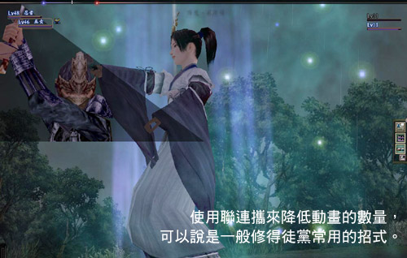
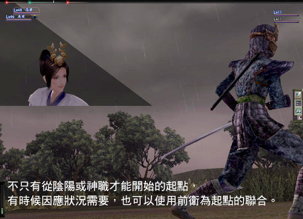
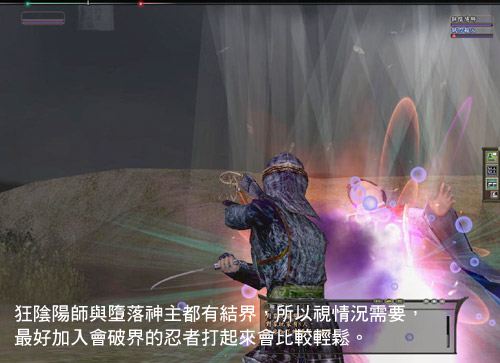
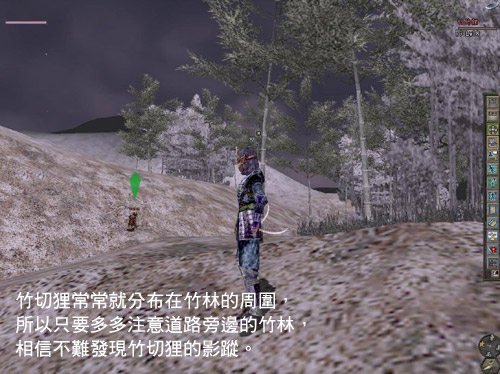

《信 ON 》也跟其他遊戲一樣，都會有些投資報酬率較高的怪物，只要挑對怪物，相信可以讓各位玩家們有事半功倍的效果。
不過也因為有些地點投資報酬率之高，在玩家一傳十、十傳百的情況下，造成許多玩家聚集的景象，而這些地方就是所謂的熱門練功地點！
而這些地點，也可以依據不同等級玩家目的不同來區分（例如︰經驗為目的、修得為目的等等），
因此不見得所有推薦給你的練功地都是以幫助經驗值成長為主的喔！玩家也可依照自己的目的選擇適合自己的練功地點！
1～30級修得必殺怪
大部分 30 級以下玩家在面對修得團為主流的情況下，大多得跟著修得團一路打到 30 級左右。
一般而言，修得團大多選擇的目標也都有一定的原則︰
（ 1 ）怪少體
（ 2 ）修得全滿
（ 3 ）清怪速度快
（ 4 ）怪重生速度快
因此，只要能夠符合以上這些要件，基本上就可以算是十分有效率的修得團了。
相對地，所以只要能夠符合以上的條件的怪，就可以算是相當不錯的修得怪囉！
由於修得團的重點並不是在怪物身上，而是能不能湊出足夠的人數！人數比例可 是相當重要的修得關鍵因素！


以下就是筆者所挑選出來，以目前最具人氣的美濃、三河等人口聚集地為中心， 介紹比較熱門的幾個修得怪，
當然除了這些怪之外，還有許許多多適合的怪，等 著玩家自己對照上述的標準去找出來囉！
美濃修得特區
怪物名稱 |
愛哭鬼、草之者 |
等級 |
12 ～ 13 |
座標 |
f-G |
使用技能 |
仁王挺立、發散藥 |
如果玩家要把愛哭鬼當成一切修得的開始，可以說是當之無愧。
主要在於牠少體、易打及修得滿，想當年日版的修得團也就是從這裡開始的喔！
可是就以現在眼光來看的話，其實這怪也不是非常完美，畢竟分布地太零散了，而且有些愛哭鬼晚上常常會轉變成為另外一種怪！
以美濃為例的話，白天是愛哭鬼，晚上就會搖身一變變成草之者。可是不管怎麼變，好練修得的優勢還是存在，依舊受到修得團青睞。
因為是修得團，所以徒黨的成員職業編成並沒有非常重要，只要人數足夠，要打倒牠並不會有太大的問題。
所以一般在招募類似的修得徒黨的時候，幾乎是不挑職業的，尤其是現在有了新參者光輝的技能後，
就算全部由後衛所組成的修得徒黨，也是可以輕鬆獲勝。
可是，若要講求真正的效率的話，就可以試著用法術聯合，讓動畫術減到最低，以達到最快修得的目標。
怪物名稱 |
墮落神主 |
等級 |
12 級左右 |
座標 |
c-E |
使用技能 |
初期有反射結界，攻擊賦予‧壹，防禦賦予‧壹，降魔‧序，衰氣光‧壹，神之庇蔭‧貳 |
分布在美濃的墮落神主與分布在駿河的狂陰陽師可以說是相當類似的兩個修得怪。
兩種怪的分布範圍都滿廣的，不過該有的修得怪的條件一應俱全。
但就比較起愛哭鬼跟算盤和尚等怪來說，這兩種怪的聚集性比較高，即使兩個徒黨在同一地區搶修得怪也不用擔心。
不過這兩種怪都會施放結界，所以如果隊上沒有能破界的忍者，就只好用聯合的方式來打倒牠們。
駿河修得特區
怪物名稱 |
狂陰陽師 |
等級 |
15 |
座標 |
h-I |
使用技能 |
結界‧壹，黑暗‧壹，低速化‧壹，氣力咒霧‧壹，光芒，烈風‧壹，業火‧壹，召雷‧壹，火炎‧壹 |
※ 推薦原因玩家可參考美濃的墮落神主

| 怪物名稱 |
算盤和尚、日和見和尚 |
等級 |
14 、 18 |
座標 |
g-H |
使用技能 |
反射結界（日和見和尚），高速化‧壹，降魔‧壹，英明‧壹，回復‧序，回復‧壹，氣力擊‧壹，仁王挺立 |
喜歡圍繞著茶屋的這些和尚，普遍分布在許多地方。從駿河到三河甚至美濃，都可以看到這些和尚的影蹤。
就分布的地點來說，愛哭鬼喜歡繞著房舍或茅屋採集所等地，而和尚喜歡繞著茶屋，就這點來說兩者可以說是相當類似的。
所以這些和尚也跟愛哭鬼一樣，深深受到修得團的喜好。
只是有別於愛哭鬼，這些和尚會放結界，如果打擊的威力不夠的話，最好還是帶著忍者去破結界會比較好一點。
如果沒有忍者，對方又放出反射結界的話，可以利用法術或攻擊聯合來打倒牠。
在這之中日和見和尚會掉落特殊裝備，對初期資金比較不充裕的玩家來說，也算是相當不錯的裝備。
另外，除了零零散散的分布之外，駿河有一個區域有這些和尚的集結地，所以可以成為相當熱門的修得區域，
如果是北條或武田的玩家，在本國找不到適當的修得場所，不妨去駿河一趟，相信這些和尚會滿足玩家的需求。
三河修得特區
怪物名稱 |
殘暴小熊 |
等級 |
15 |
座標 |
c-G |
使用技能 |
呼出，囓破‧壹，連打，恐怖的喊叫，識破，冷命粉 |
分布在許多地方的小熊，再經過一次改版之後取代了食人狼的地位，躍昇成為動物系修得團的首選。
小熊分布的地點主要為甲斐跟三河等地，體數不多修得全滿這些優點當然不再話下，
不同於前面幾種修得怪，
小熊的群聚性比起其他修得怪還要來的好。
不像愛哭鬼及算盤和尚，小熊大部分集中在森林地區，而且通常不會只有一隻，都會有四到伍隻聚集在一起。
可是這是優點也可以算是缺點，因為小熊的附近，通常都有凶暴的熊或者美人山僧等比較高等的怪出沒，
所以玩家們在修得的時候，要特別注意這些怪物，不然不小心撞上了可就不妙了。
信濃修得特區 <看怪物分佈圖>
信濃這塊位於《信 ON 》中央偏右的區域，可以說是各地交通的要道，然而就在這個要道，也是修得者最愛的天堂之一。
整體來說，信濃的怪有幾個特徵，首先就是怪的體數大部分是 1 ～ 3 體，修得方面也都有很不錯的表現。
這裡光是可以練修得的場所，起碼就有 5 、 6 個以上。從 10 ～ 30 級左右，這裡都有極佳的修得怪可以吃。
所以說信濃是修得的特區一點也不為過，唯一可以說是美中不足的地方，就是畢竟是支國（非玩家的出生國），
所以人潮來說通常不會聚集在這裡。所以大部分的隊伍也都是在各地組好隊之後，才會前來信濃。
不過因為修得的怪物都不是很強。要是玩家只有一個人，又找不到徒黨的話，不妨來信濃碰碰運氣，說不定就會遇到有缺人的徒黨也說不定喔！
怪物名稱 |
淚婆、野人婆 |
等級 |
15 、 28 |
座標 |
o-F |
使用技能 |
眼光、活身‧序、吟唱賦予、天懲、乏力之舞、咒縛、黑暗 |
相信提到淚婆，有不少玩家可能會會心的一笑吧！沒錯，提到了修得恐怕除了愛哭鬼之外，最多人會想到的可能就是淚婆了。
位於信濃深山谷深處的淚婆，不知道已經幫助過多少玩家修完書。
除了淚婆少體、易打、隻數多外，另一方面又因為信濃是支國的關系，所以常常可以看到不少徒黨人數沒有湊齊依然在當地練功。
淚婆畢竟是妖婆系，所以需要注意一下眼光，眼光通常有重複看同一個人的趨勢，所以一旦在徒檔裡成為淚婆眼光的主要目標，
應該不要在去跟聯合，以免聯合因為自己的參加而被中斷！
怪物名稱 |
偽修驗者、竹切狸 |
等級 |
20 、 18 |
座標 |
g-B 、 g-C |
使用技能 |
偽修驗者—詛咒‧壹、全體治療‧壹、甦醒‧壹
竹切狸—攻擊詛咒‧壹、防禦詛咒‧壹、防禦賦予‧壹、結界、全體治療‧壹、乏力之舞 |
偽修驗者與竹切狸分布在信濃的許多地方，尤其竹切狸跟算盤和尚等類似，多半分布在竹子的附近。
不過由於這兩者分布的太過於分散，所以很少有徒黨會專注在打同一隻身上，多半是以 2 ～ 3 個點做巡迴式的掃蕩。
兩種怪都可能會放結界，尤其竹切狸還會使用氣合咒霧，所以在徒黨裡放個會破界與回復氣合的職業打起來應該會更加輕鬆。

怪物名稱 |
鬼小熊 |
等級 |
23 |
座標 |
l-F |
使用技能 |
連打、渾身擊、囓破、咒縛的喊叫、沉默的喊叫、威嚇、識破 |
雖然是藥師的試驗所需要打的怪，不過鬼小熊也具有修得的潛力。
只可惜再生的速度不夠理想，隻數也不夠多，使得修得效率大大降低了不少。
不過鬼小熊的優勢還是存在的，不要以死守的方式，試著將他編排到路線上進行來回的掃蕩，也是不錯的選擇。
怪物名稱 |
川童、置魚怪 |
等級 |
27 、 23 |
座標 |
k-E |
使用技能 |
乏力之舞、結界 |
分布在信濃中央湖泊附近的川童與置魚怪，也是不少玩家聚集的修得場所。由於他就在道路上徘徊，相信不少玩家一定有遇過他。
川童與置魚怪有別於其他信濃怪的特徵，分布的範圍可以說相當集中，隻數也相當多。
所以很容易成為玩家們聚集的目標，不過比起其他修得怪來說，他擁有氣合咒霧與乏力之舞這些危險的技巧，吃起來的確也要多花一點心思。
不過綜合來說，這些小鬼系的怪絕對可以成為玩家們修書的好對象。
一般來說，大部分的徒黨會選擇在湖泊的北岸進行修得，可是一旦開始有多個徒黨同時在這邊練功，可能範圍就會稍微拉大一點。
不過要特別注意在南岸會有黑大龍王的蹤跡，如果撞上他的話很可能會導致滅團的危機。
怪物名稱 |
路煞兵 |
等級 |
28 |
座標 |
r-C |
使用技能 |
連擊 |
分布在信濃各地的路煞兵，是一個連 30 級都可以有修得的難得好怪。
對於一些初期錯過比較多修得機會的玩家來說，或許路斬兵是最後的補救機會也說不定。
路斬兵一樣擁有修得怪需要具備的特質，不過相同的也具有信濃許多修得怪的缺點 —— 不夠集中。
只要玩家能夠確實掌握住路煞兵出沒的位置，相信在獵殺起來會迅速不少，打起來也會比較有效率。
不過由於路煞兵的攻擊力不低，所以也要小心隊伍上平均的等級相差不要太大，如果有相差太多的玩家，就會需要盾役來保護了。
只要能夠小心這一點，相信路煞兵一定可以成為一個可口的修得怪。
會以美濃、信濃、甲斐以及三河等地做比較密集介紹的原因，是因為他們是大部分玩家所聚集的場所。
修得團一般而言，就像前面所提到的，與其說比較重視職業，不如說比較重視人數。
所以一般在這些場所，比較容易找到修得團的影蹤，而這些怪也比較容易成為玩家們所選擇的目標。
當然在《信 ON 》的世界裡，也會有像三河的大蜘蛛等熱門的修得目標。
請注意：官方每個禮拜三都會微調怪的經驗值跟修得值，本篇內容會有所出入，請斟酌參考。